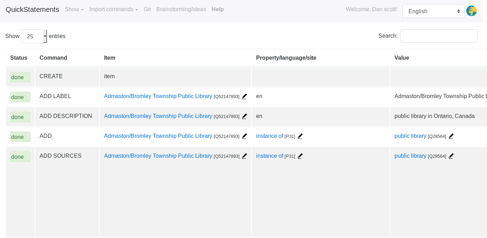

Wikidata: McGill SIS Workshop
Dan Scott <https://dscott.ca/#i>
Doctoral student, McGill University
2018-11-12
Linked open data
Making statements about things
- Montreal -- instance of -- metropolis
- ... using the Resource Description Framework (RDF) triple pattern:
- subject -- predicate -- object
- with links (URIs) instead of labels:
Dereferencing links
Links may give you more information about themselves (if you ask nicely):curl -LH 'Accept: text/turtle' http://example.org/metropolis
@prefix example: <http://example.org> .
example:metropolis a example:Item ;
example:subclass_of example:city ;
example:named_after example:mother ;
example:named_after example:city .(Wikidata) opaque identifiers
Opaque identifiers allow neutral multilingualism:http://www.wikidata.org/entity/Q340 https://www.wikidata.org/entity/P31 http://www.wikidata.org/entity/Q200250
@en: Montreal -- instance of -- metropolis
@fr: Montréal -- nature de l'élément -- métropole
@atj: Moriak -- nature de l'élément -- métropoleLinked open data
- Wikidata: CC-0 license
- (Roughly: Do whatever you want, no attribution required)
Wikidata advanced data model
Qualifying statements
wd:Q340 wdt:P1082 "+1704694"^^xsd:decimal ;Qualifier: A statement about a statement
wd:Q340 p:P1082 wds:Q340-4460bad7 .
wds:Q340-4460bad7 a wikibase:Statement ;
ps:P1082 "+1704694"^^xsd:decimal ;
pq:P585 "2016-01-01T00:00:00Z"^^xsd:dateTime ;Establishing trust
References - Blocks of statements about a statementwd:Q340 p:P1082 wds:Q340-4460bad7 .
wds:Q340-4460bad7 a wikibase:Statement ;
ps:P1082 "+1704694"^^xsd:decimal ;
prov:wasDerivedFrom wdref:229126ee7cccf5ae097b4f604191a1a3e66b97ac .
wdref:229126ee7cccf5ae097b4f604191a1a3e66b97ac a wikibase:Reference ;
pr:P248 wd:Q16955163 .
wd:Q16955163 a wikibase:Item ;
rdfs:label "Canada 2016 Census"@en ;Getting data: dereferencing
URI patterns
| URI type | Pattern |
|---|---|
| Wiki (human) | http://www.wikidata.org/wiki/(P|Q)### |
| Concept (RWO) | http://www.wikidata.org/entity/(P|Q)### |
| Data (document) | http://www.wikidata.org/Special:EntityData/(P|Q)### |
Pprefixes identify propertiesQprefixes identify items
Serializations
Media type (Accept:) | Extension |
|---|---|
| application/json | .json1 |
| application/n-triples | .nt |
| application/rdf+xml | .rdf |
| text/html | .html |
| text/n3 | .n3 |
| text/turtle | .ttl |
1. Wikidata's JSON format is not JSON-LD.
Dereference and dig in
curl -LH 'Accept: text/turtle' http://www.wikidata.org/entity/Q6801308
@prefix wikibase: <http://wikiba.se/ontology-beta#> .
@prefix wdata: <https://www.wikidata.org/wiki/Special:EntityData/> .
@prefix schema: <http://schema.org/> .
@prefix cc: <http://creativecommons.org/ns#> .
@prefix wd: <http://www.wikidata.org/entity/> .
wdata:Q6801308 a schema:Dataset ;
schema:about wd:Q6801308 ;
cc:license <http://creativecommons.org/publicdomain/zero/1.0/> ;
schema:softwareVersion "0.1.0" ;
schema:version "632535452"^^xsd:integer ;
schema:dateModified "2018-02-17T22:02:36Z"^^xsd:dateTime ;
wikibase:statements "9"^^xsd:integer ;
wikibase:identifiers "2"^^xsd:integer ;
wikibase:sitelinks "2"^^xsd:integer .Labels and descriptions
curl -LH 'Accept: text/turtle' http://www.wikidata.org/entity/Q6801308
@prefix wikibase: <http://wikiba.se/ontology-beta#> .
@prefix wds: <http://www.wikidata.org/entity/statement/> .
@prefix wd: <http://www.wikidata.org/entity/> .
@prefix wdt: <http://www.wikidata.org/prop/direct/> .
@prefix wdtn: <http://www.wikidata.org/prop/direct-normalized/> .
@prefix p: <http://www.wikidata.org/prop/> .
wd:Q6801308 a wikibase:Item ;
rdfs:label "McGill University Library"@en ;
skos:prefLabel "McGill University Library"@en ;
schema:name "McGill University Library"@en ;
rdfs:label "Bibliothèque de l'Université McGill"@fr ;
skos:prefLabel "Bibliothèque de l'Université McGill"@fr ;
schema:name "Bibliothèque de l'Université McGill"@fr ;
schema:description "library system of McGill University in Montreal, Quebec, Canada"@en,
"universiteitsbibliotheek in Montreal, Canada"@nl ;Truthy values
@prefix wdt: <http://www.wikidata.org/prop/direct/> .
wd:Q6801308 a wikibase:Item ;
wdt:P17 wd:Q16 ;-
The country (
P17) for the McGill library system is Canada (Q16). -
wdt:is the "truthy" value for a given statement; qualifiers such as "start date" or "language of work" are stripped out, and instead appear in separate statements.
Normalized values
@prefix wdt: <http://www.wikidata.org/prop/direct/> .
@prefix wdtn: <http://www.wikidata.org/prop/direct-normalized/> .
wd:Q6801308 a wikibase:Item ;
wdt:P2581 "01813570n" ;
wdtn:P2581 <http://babelnet.org/rdf/s01813570n> ;
wdt:P856 <http://www.mcgill.ca/library/> ;
-
wdtnis the "truthy normalized" value for a given statement. The BabelNet ID (0181357n) is also available as a normalized URL. - The official website (P856) for the McGill library system is at the URL http://mcgill.ca/library/.
- MARC cataloguers rejoice, the 856 lives!
Qualified statements
@prefix wds: <http://www.wikidata.org/entity/statement/> .
@prefix p: <http://www.wikidata.org/prop/> .
@prefix ps: <http://www.wikidata.org/prop/statement/> .
@prefix pq: <http://www.wikidata.org/prop/qualifier/> .
wd:Q48035044 a wikibase:Item ;
rdfs:label "South End Library"@en ;
wdt:P856 <http://www.sudburylibraries.ca/en/aboutus/southendlibrary.asp>,
<http://www.sudburylibraries.ca/fr/aboutus/southendlibrary.asp> ;
wd:Q48035044 p:P856 wds:Q48035044-814e2829-4ba7-ec4b-c397-da81f893b64b .
wds:Q48035044-814e2829-4ba7-ec4b-c397-da81f893b64b a wikibase:Statement,
wikibase:BestRank ;
wikibase:rank wikibase:NormalRank ;
ps:P856 <http://www.sudburylibraries.ca/en/aboutus/southendlibrary.asp> ;
pq:P407 wd:Q1860 .Getting data: SPARQL endpoint
| Humans | https://query.wikidata.org/ |
| Machines | https://query.wikidata.org/sparql |
Friendly human interface
- Auto-completion
- Hover for labels
- Results as maps, images, trees, timelines, charts...
- Rich set of examples just a click away

Quirks
- Highly available, averaging over 3M queries/day
- Long-running queries are killed after 60 seconds
- Data is ~5 minutes behind main site
- Wikibase services (extended functions)
Powering live lookups
Label service
Rather than:SELECT ?library ?libraryLabel WHERE {
?library wdt:P31 wd:Q856234.
?library rdfs:label ?libraryLabel.
FILTER(lang(?libraryLabel) = 'en' || lang(?libraryLabel) = 'fr')SELECT ?library ?libraryLabel WHERE {
?library wdt:P31 wd:Q856234.
SERVICE wikibase:label { bd:serviceParam
wikibase:language "[AUTO_LANGUAGE],en,fr". }Geospatial services
wikibase:aroundwikibase:box
wikibase:box example (libraries between San Jose and Sacramento)
Getting data: Wikibase API
Base URL for all modules: https://wikidata.org/w/api.php
Modules: wbavailablebadges, wbcheckconstraintparameters, wbcheckconstraints, wbcreateclaim, wbcreateredirect, wbeditentity, wbformatvalue, wbgetclaims, wbgetentities, wblinktitles, wbmergeitems, wbparsevalue, wbremoveclaims, wbremovequalifiers, wbremovereferences, wbsearchentities, wbsetaliases, wbsetclaim, wbsetclaimvalue, wbsetdescription, wbsetlabel, wbsetqualifier, wbsetreference, wbsetsitelink, wbsgetsuggestions, webapp-manifest
API: Search entities
- Retrieve entities with labels or aliases that match a string: wbsearchentities
- Query params:
{ "action": "wbsearchentities", "format": "json", "search": "mcgill university library", "languages": "en" } - Results via API Sandbox
API: Get entities
- Retrieve claims for one or more items: wbgetentities
- Query params:
{ "action": "wbgetentities", "format": "json", "ids": "Q6801308|Q48035044", "languages": "en|fr" } - Results via API Sandbox ("snak" format)
- claim IDs (
"Q6801308$E938C340-3F01-41BA-BF4A-3B19F36337DA") used inwbsetclaim, etc
Best(?) LOD workflow
- Use wbsearchentities to find matching items
- Dereference the items with the LOD serialization of your preference
Editing data: QuickStatements
Q849751 → Len → "York University"- Tab-delimited format for adding/editing Wikidata items (docs)
- Editing a label (
Llangcode) replaces the current label, if any. - Strings are delimited by double quotes
Editing statements
Q849751 → P17 → Q16Adds a new statement if it does not exactly match the current property
Create an item
CREATE
LAST → Len → "Ajax Public Library"
LAST → P31 → Q28324850CREATEcreates a new itemLASTrefers to the most recently created item
Add/edit qualified statements
Q41506 → P2196 → 16336 → P585 → +2016-10-23T00:00:00:Z/11- Add 1 or more
P###qualifiers to the statement - Datetime values use
+yyyy-MM-ddThh:mm:ss:Z/precisionformat
Statements with sources
Q41506 → P2196 → 16336 → P585 → +2016-10-23T00:00:00:Z/11
→ S854 → "https://example.com"
→ S813 → +2018-04-29T00:00:00:Z/11Use S as the prefix for P### IDs when used as source statements
Applying QuickStatements
- Upload to http://tools.wmflabs.org/quickstatements/ and either:
- Run in your browser (ongoing feedback but slow for large jobs)
- Run on the server as a background job
QuickStatements sample
CREATE
LAST Len "Ajax Public Library"
LAST Den "library system in Ontario, Canada"
LAST P31 Q28324850 S248 Q52147771 S854 "https://files.ontario.ca/opendata/ontario_public_library_statistics_open_data_2016.csv" S813 +2018-04-22T00:00:00Z/11
LAST P17 Q16 S248 Q52147771 S854 "https://files.ontario.ca/opendata/ontario_public_library_statistics_open_data_2016.csv" S813 +2018-04-22T00:00:00Z/11
LAST P131 Q386567 S248 Q52147771 S854 "https://files.ontario.ca/opendata/ontario_public_library_statistics_open_data_2016.csv" S813 +2018-04-22T00:00:00Z/11
LAST P463 Q7570226 S248 Q52147771 S854 "https://files.ontario.ca/opendata/ontario_public_library_statistics_open_data_2016.csv" S813 +2018-04-22T00:00:00Z/11
LAST P969 "55 Harwood Avenue South, Ajax, Ontario, L1S 2H8" S248 Q52147771 S854 "https://files.ontario.ca/opendata/ontario_public_library_statistics_open_data_2016.csv" S813 +2018-04-22T00:00:00Z/11
LAST P856 "http://ajaxlibrary.ca" S248 Q52147771 S854 "https://files.ontario.ca/opendata/ontario_public_library_statistics_open_data_2016.csv" S813 +2018-04-22T00:00:00Z/11
LAST P1174 9457 P585 +2016-00-00T00:00:00Z/9 S248 Q52147771 S854 "https://files.ontario.ca/opendata/ontario_public_library_statistics_open_data_2016.csv" S813 +2018-04-22T00:00:00Z/11Load into https://tools.wmflabs.org/quickstatements
Source: https://gitlab.com/denials/wikidata_ontario_public_libraries
Applying QuickStatements
OpenRefine reconciliation
OpenRefine Wikidata extension

In development since August 2017
Details

This work is licensed under a Creative Commons Attribution-ShareAlike 4.0 International License